点击查看如何执行一次测试活动？
测试用例是维护测试用例的文档，包括添加、修改、删除、查看、复制、生成文档、生成测试计划表、导出导入、文档合并等操作。如下图所示。
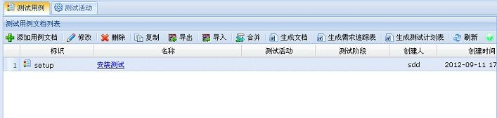
图 测试用例界面
1、 添加用例文档
通过用例文档列表工具栏或右键菜单的“添加”添加用例文档。
2、 修改用例文档
在用例文档列表中选择一个要修改的用例文档，然后通过工具栏或右键菜单的“修改”修改用例文档。
3、 删除用例文档
在用例文档列表中选择一个要删除的用例文档，然后通过工具栏或右键菜单的“删除”删除用例文档。
4、 查看用例文档
在列表中单击用例文档“名称”一列，在系统弹出的测试用例管理页面查看用例文档的详细信息。
5、 复制用例文档
在列表中选择一个要重用的用例文档，通过工具栏或右键菜单的“复制”复制用例文档。
6、生成文档
在列表中选择一个用例文档，通过工具栏或右键菜单的“生成文档”将用例文档以word形式输出。
7、 生成测试计划表
在列表中选择一个用例文档，通过工具栏的“生成测试计划表”将根据用例文档内容生成测试计划，测试计划表以word形式输出。如下图所示。
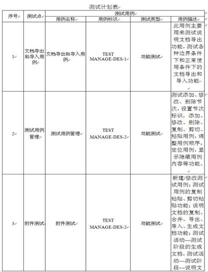
图 测试计划表
1、导出
在列表中选择一个用例文档，通过工具栏或右键菜单的“导出”将用例文档以zip压缩包格式导出系统。
2、导入
在用例文档列表中通过工具栏或右键菜单的“导入”将测试管理系统中导出的zip压缩包导入到不同的系统中，方便了数据文件的离线交换。
1、在列表中选择一个用例文档，然后选择工具栏或右键菜单的“合并”，系统弹出如下图所示的选择被合并文档界面。
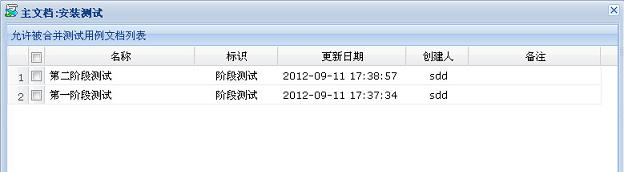
图 选择文档界面
2、在被合并文档界面中选择一个文档，然后选择界面下方的“确定”按钮，系统弹出如下图所示的合并操作界面。在合并操作界面的主文档中选择一个节次，在被合并文档测试用例列表中选择状态为新增或修改的用例，然后选择界面下方“合并”按钮，合并操作成功。
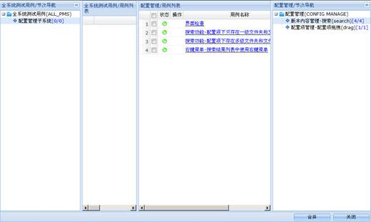
图 合并文档
测试用例管理主要是维护章节和测试用例，包括添加节次、修改节次、删除节次、设置标识，添加用例、修改用例、删除用例、调整用例顺序、用例的复制剪切粘贴等，测试用例管理页面如下图所示。
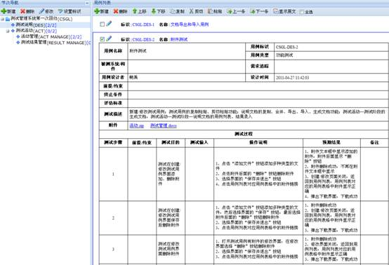
图 测试用例管理页面
1、 添加节次
在节次导航中选择根节点，然后通过工具栏或右键菜单的“添加”添加节次。在节次导航树中选择一个已添加的节点，然后通过工具栏或右键菜单的“添加”添加子节次。
2、 修改节次
在节次导航中选择一个节点，然后通过工具栏或右键菜单的“修改”修改节次。
3、 删除节次
在节次导航中选择一个节点，然后通过工具栏或右键菜单的“删除”删除节次。
4、 设置节次标识
在节次导航中选择一个节点，然后通过工具栏或右键菜单的“设置节次标识”设置节次的标识。
1、 新建测试用例
在节次导航中选择一个节次，然后通过用例列表工具栏或右键菜单的“新建”添加测试用例，新建测试用例界面如下图所示。
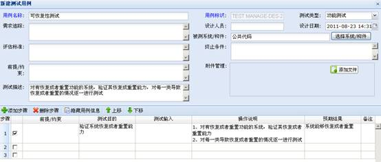
图 新建测试用例
在添加测试用例界面可以添加、删除步骤，通过双击列表中可编辑的单元格修改步骤的相应内容，通过上移、下移按钮调整步骤的顺序。
2、 修改测试用例
在节次导航中选择一个节次，用例列表中显示该节次下相应的测试用例。在测试用例列表中选择一个用例，然后通过用例前面的修改图标或右键菜单的“修改” 菜单修改测试用例。
3、 删除测试用例
（1）删除一个用例
在节次导航中选择一个节次，用例列表中显示该节次下相应的测试用例。在用例列表中选择一个用例，然后通过工具栏或右键菜单的“删除”删除测试用例。
（2）删除多个用例
在节次导航中选择一个节次，用例列表中显示该节次下相应的测试用例。在用例列表中勾选工具栏的“全选”，然后通过工具栏的“删除”删除该节次下所有测试用例。
4、 定位测试用例
在用例列表中选择一个用例，然后通过工具栏的“上一条”、“下一条”调整选中的用例。
5、 收起显示测试用例原文
（1）收起原文
收起所有测试用例：在用例列表中测试用例都是展开状态，此时选择工具栏的“收起原文”将展开的测试用例内容隐藏起来，只显示标识和名称。
收起单个测试用例:在用例列表中选择一个展开状态的测试用例，此时选择右键菜单的“收起原文”将展开的测试用例内容隐藏起来，只显示标识和名称。
（2）显示原文
显示所有测试用例：在用例列表中测试用例都是隐藏状态，此时选择工具栏的“显示原文”将隐藏的测试用例内容显示出来。
显示单个测试用例：在用例列表中选择一个隐藏状态的测试用例，此时选择工具栏的“显示原文”将隐藏的测试用例内容显示出来。
在用例列表中选择一条或多条测试用例，然后通过工具栏的“上移”、“下移”调整用例的顺序。
在用例列表中选择一条或多条测试用例，然后选择工具栏的“复制”按钮，最后通过工具栏的 “粘贴”按钮将复制的用例粘贴到用例列表中。
在用例列表中选择一条或多条测试用例，然后选择工具栏的“剪切”按钮，最后通过工具栏的 “粘贴”按钮将剪切的用例粘贴到用例列表中。
测试活动记录测试活动下的阶段，以及测试阶段与测试用例和测试结果的关联。测试活动页面如下图所示。
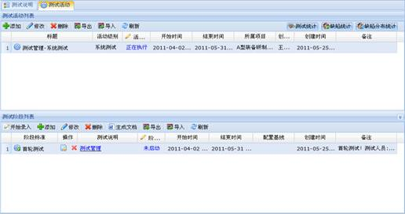
图 测试活动页面
1、 添加测试活动
在测试活动列表中通过工具栏的“添加”按钮添加测试活动。
2、 修改测试活动
在测试活动列表中选择一个测试活动，通过工具栏的“修改”按钮修改测试活动。
3、 删除测试活动
在测试活动列表中选择一个测试活动，通过工具栏的“删除”按钮删除测试活动。
1、导出
在测试活动列表中选择一个测试活动，通过工具栏的“导出”按钮将测试活动以zip压缩包形式导出。
2、导入
在测试活动列表中选择一个测试活动，通过工具栏的“导入”按钮将从测试管理系统中导出的zip压缩包导入到本系统。
1、 添加测试阶段
在测试活动列表中选择一个活动，测试阶段列表中显示该活动对应的测试阶段，通过测试阶段列表工具栏的“添加”添加测试阶段。
2、 修改测试阶段
在测试阶段列表中选择一个阶段，然后通过测试阶段列表工具栏的“修改”修改测试阶段。
3、 删除测试阶段
在测试阶段列表中选择一个阶段，然后通过测试阶段列表工具栏的“删除”删除测试阶段。
4、 生成文档
在测试阶段列表中选择一个关联说明文档的阶段，然后通过测试阶段列表工具栏的“生成文档”将测试阶段关联的说明文档内容以word形式输出。
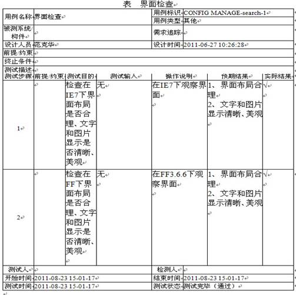
图 生成文档
1、 测试用例结果管理
在测试阶段列表工具栏处点击“开始录入”按钮或者点击测试说明文档名称链接，打开测试用例结果管理界面，如下图所示。
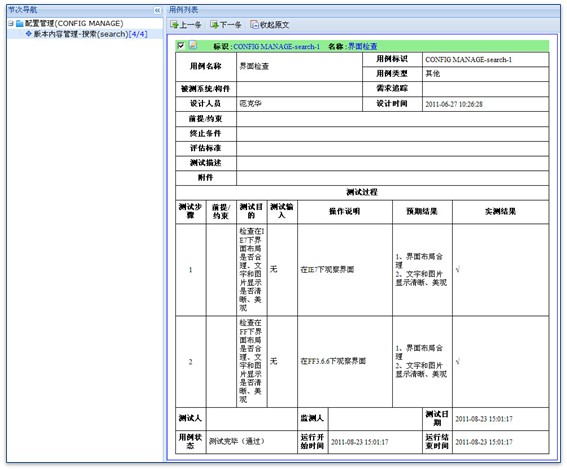
图 测试用例结果管理
2、 测试用例结果录入
在测试用例结果管理界面，点击用例标识前的“结果录入”按钮，打开录入界面，填写测试结果并保存，录入测试结果时也可以添加缺陷，点击列表中操作列下的BUG图标就可以为没有通过的测试用例添加缺陷了。如下图所示。
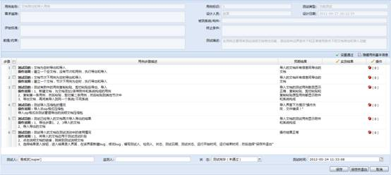
图 测试用例结果录入
1、导出
在测试阶段列表中选择一个阶段，然后通过测试阶段列表工具栏的“导出”将测试阶段以zip压缩包形式导出。
2、导入
在测试活动列表中选择一个活动，测试阶段列表中显示该活动对应的测试阶段，然后通过测试阶段列表工具栏的“导入”将从测试管理系统中导出的zip压缩包导入。
在测试活动列表中选择一个测试活动，然后通过工具栏的“测试统计报表”按钮统计该测试活动下各阶段关联的测试说明文档中测试用例和缺陷各种情况的统计数据。如下图所示。
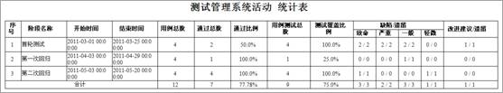
图 测试统计报表
在测试活动列表中选择一个测试活动，然后选择工具栏的“缺陷统计报表”按钮，系统弹出如下图所示按条件统计缺陷的界面。
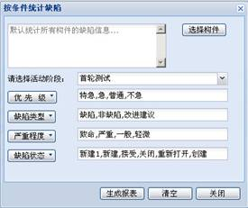
图 按条件统计缺陷
在按条件统计缺陷界面选择统计条件，然后选择界面下方的“生成报表”按钮，系统弹出如下图所示的缺陷统计报表页面。在缺陷统计报表页面单击“输出到word”链接将缺陷统计报表内容以word形式显示。
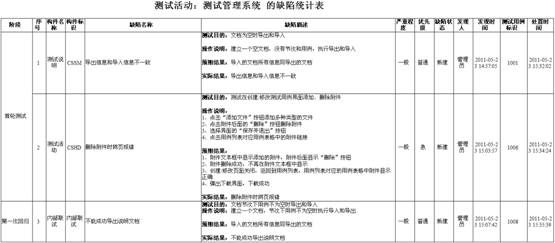
图 缺陷统计报表
在测试活动列表中选择一个测试活动，然后通过工具栏的“缺陷分布统计”按钮统计该测试活动下各阶段关联的测试说明文档中测试用例缺陷的统计。如下图所示。
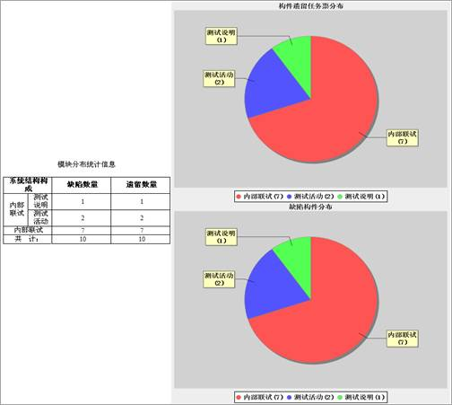
图 缺陷分布统计